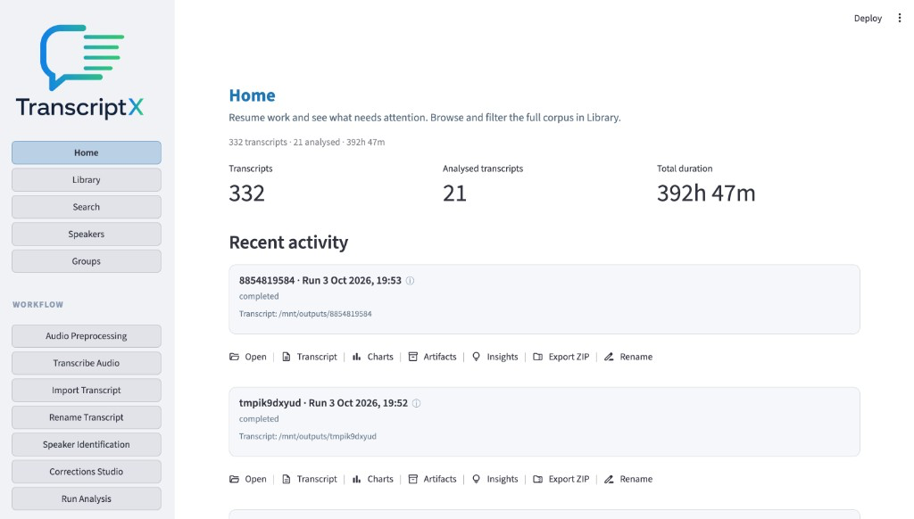
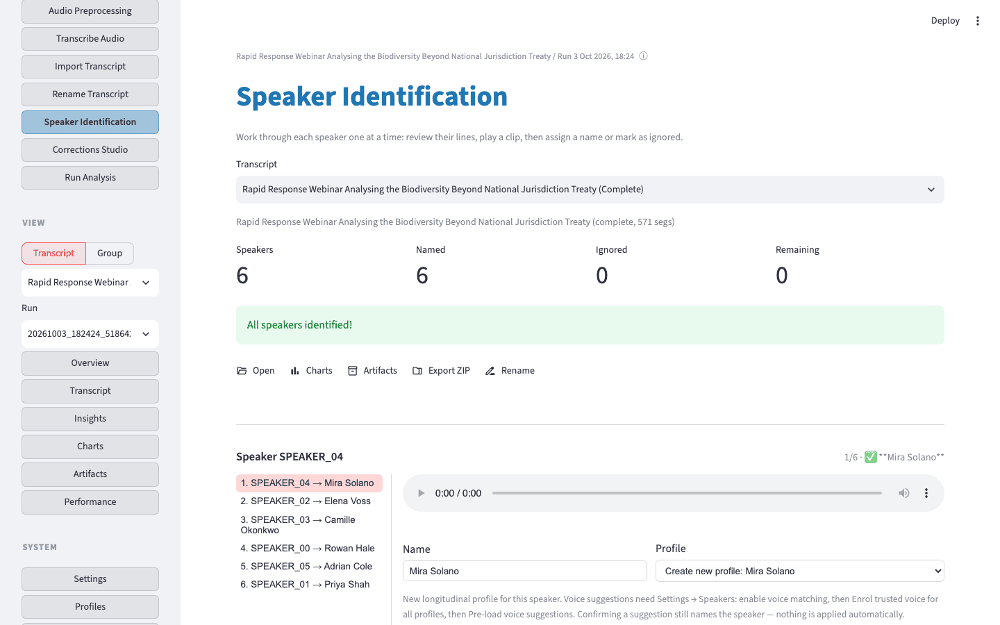
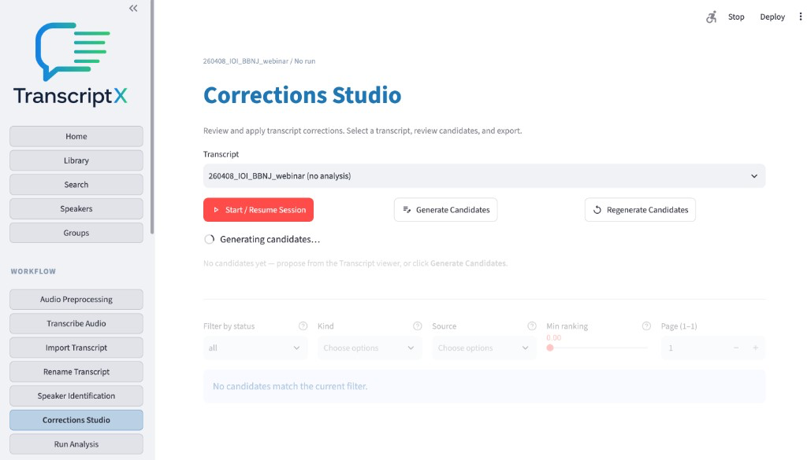
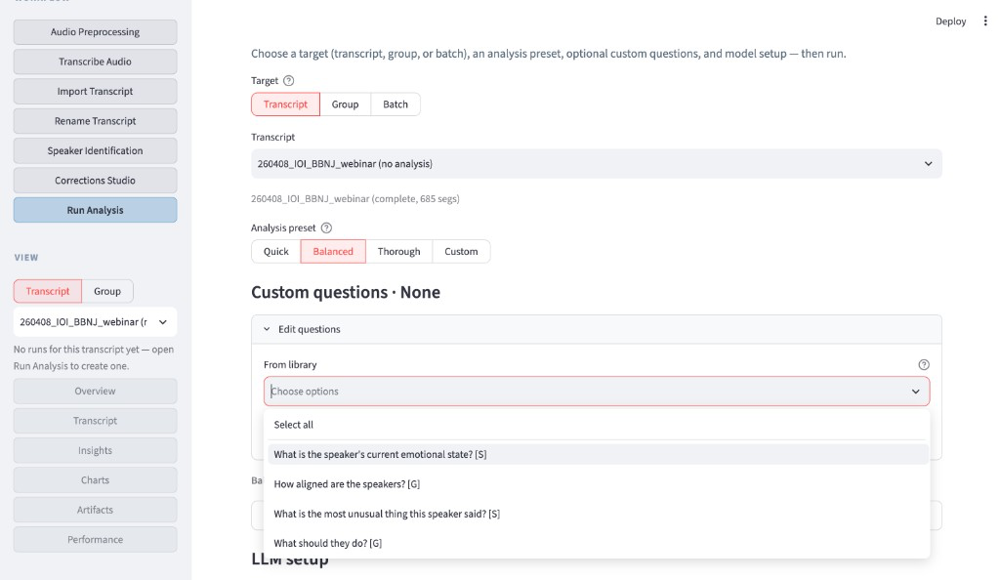
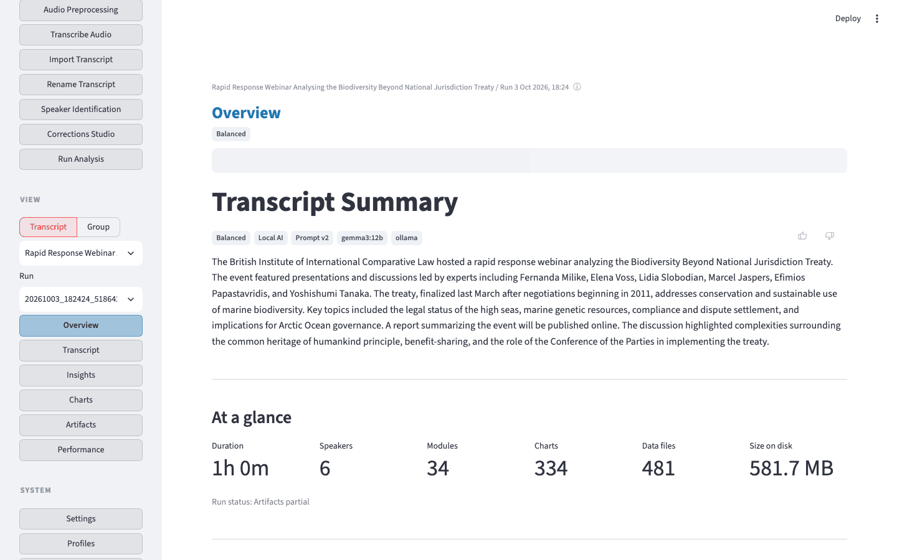
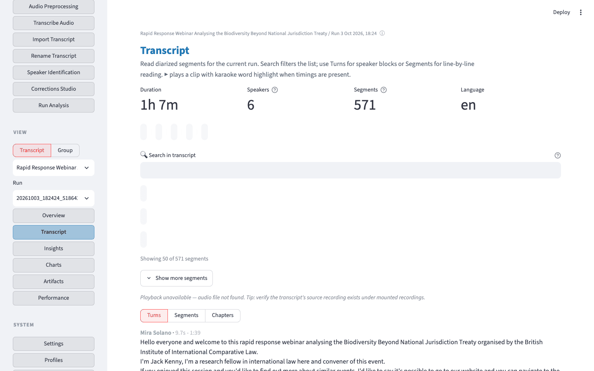
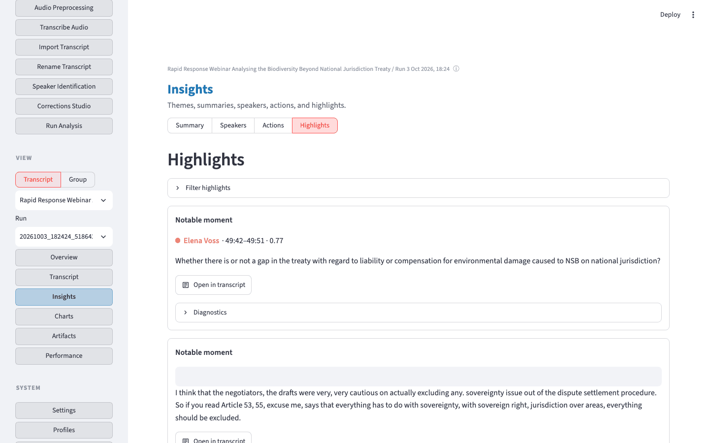
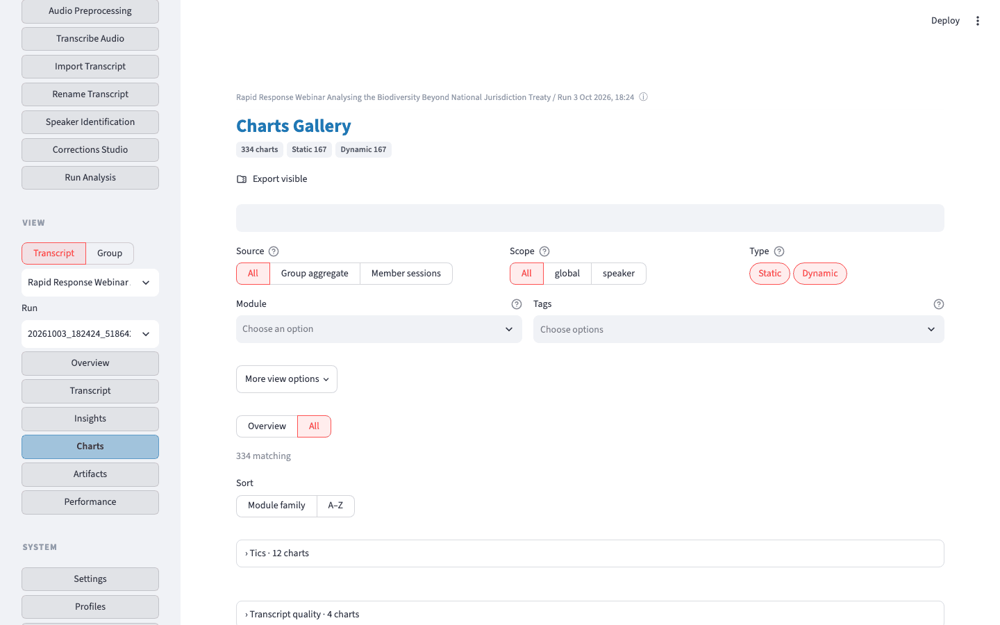

TranscriptX
Think with your transcripts — on your machine.
Import conversations you already have. See themes, speakers, and evidence in one place. Optional local AI stays on your computer.
The application
Home and recent runs, name speakers, fix the transcript, run analysis, then read Overview, the transcript, Insights, and Charts.








What can I do with it?
- Understand themes across a conversation
- Compare speakers — who said what, and how they interact
- Investigate a question and jump back to the original lines
- Analyse several conversations together over time
- Correct the transcript while you read
- Export findings as HTML or a ZIP you keep
Explore the workflows for step-by-step jobs, or see how it compares to transcription tools, meeting assistants, and research software.
On your machine
Source files and analysis results stay on your computer. Optional AI uses Ollama locally and stays off until you turn it on. Nothing here is a hosted analysis service.
From a file to a useful Overview
- Open Import Transcript and upload a JSON file.
- Open Speaker Identification and give each diarized label a display name. Most Balanced modules skip until speakers are named.
- Open Run Analysis, keep Balanced, and run it.
- Open Overview and read the summary and the at-a-glance metrics.
Install
Docker is the simplest path. Copy .env.example to
.env and set HOST_RECORDINGS_DIR to a
folder outside the repository.
git clone https://github.com/glen-w/TranscriptX.git
cd TranscriptX
cp .env.example .env # set HOST_RECORDINGS_DIR
docker compose up transcriptx-webOpen http://localhost:8501. The first run builds the image.
Native install and troubleshooting: Installation · Bring transcript files · README